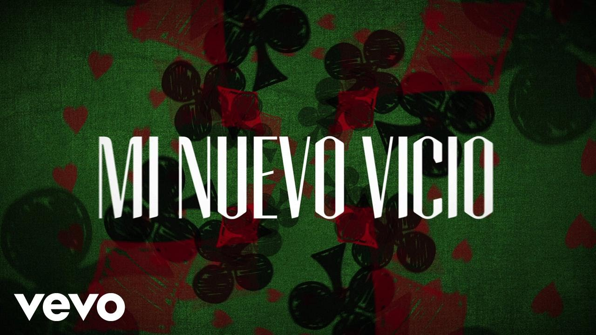
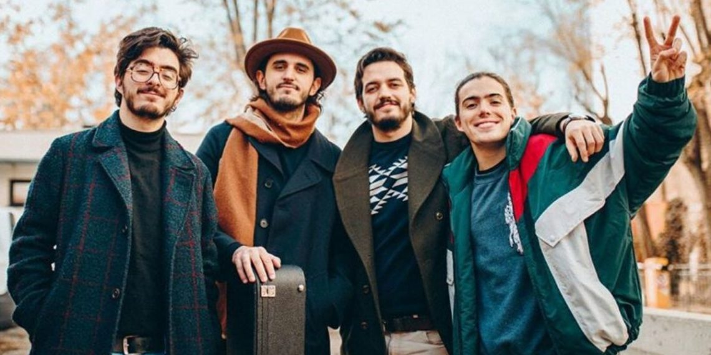
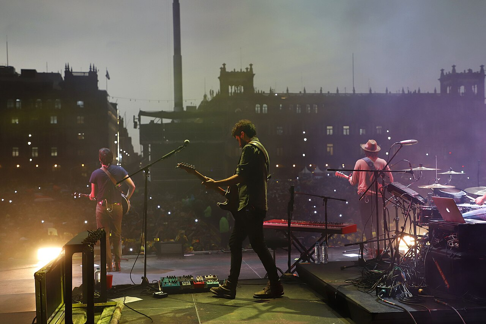

|
¿Quiénes son?
Es una banda colombiana de una mezcla entre pop latino y rock formada originalmente en Bogotá. Se diron a conocer en 2015 con su canción - Mi nuevo vicio -.

Sus integrantes son Juan Pablo Isaza Piñeros, Juan Pablo Villamil Cortés, Simón Vargas Morales y Martín Vargas Morales. Los miembros originales de Morat se conocieron mientras estudiaban en el Gimnasio La Montaña, un colegio privado en Bogotá, Colombia. Desde temprana edad, compartieron una afinidad por la música, participando en actividades escolares relacionadas con arte y presentaciones musicales. Fue en este entorno donde comenzaron a formar una conexión no solo como amigos, sino también como futuros compañeros de banda.

Durante sus años en el colegio, los integrantes experimentaron con diferentes géneros musicales, exploraron el uso de instrumentos y descubrieron su interés compartido en el folk, el pop y las baladas románticas. En un inicio, tocaban canciones de otros artistas en reuniones con amigos y eventos escolares, pero poco a poco comenzaron a componer sus propias piezas, lo que marcó el inicio de su identidad musical.

|
|